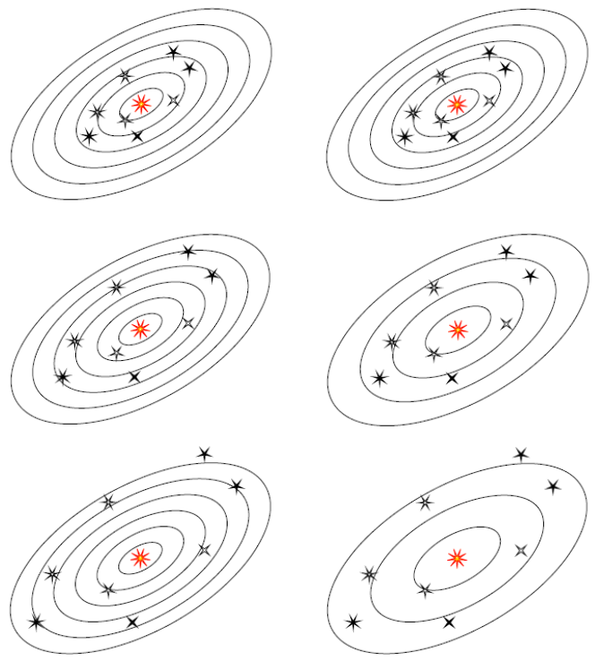

By Michael Weiss, 1994, 2017.
In a word: yes. In two sentences: the Doppler shift explanation is a linear approximation to the "stretched light" explanation. Switching from one viewpoint to the other amounts to a change of coordinate systems in (curved) spacetime.
Before plunging into details, here's a picture of the two coordinate systems. The system on the left corresponds to the Doppler shift explanation: as the galaxies flee us, their radial coordinates increase. The system on the right is known as comoving coordinates: they expand along with the fleeing galaxies, so the radial coordinates stay the same.

A detailed explanation requires looking at Friedmann–Robertson–Walker (FRW) models of spacetime. The famous "expanding balloon speckled with galaxies" provides a visual analogy; like any analogy, it will mislead you if taken too literally, but handled with caution it can furnish some insight.
Draw the coordinate system directly on the balloon. These define the comoving coordinates (on the right in the picture). Imagine a couple of speckles ("galaxies") embedded in the rubber surface. The comoving coordinates of the speckles don't change as the balloon expands, but the distance between the speckles steadily increases. In comoving coordinates, we say that the speckles don't move, but "space itself" stretches between them.
A bug starts crawling from one speckle to the other. A second after the first bug leaves, his brother follows him. (Think of the bugs as two light pulses, or successive wave crests in a beam of light.) Clearly, the separation between the bugs will increase during their journey. In comoving coordinates, light is "stretched" during its journey.
Now we switch to the coordinate system on the left in the picture, this one valid only in a neighborhood (but one large enough to cover both speckles). Imagine a clear, flexible, non-stretching patch, attached to the balloon at one speckle. The patch clings to the surface of the balloon, which slides beneath it as the balloon inflates. (The bugs crawl along under the patch.) We draw the coordinate system on the patch. In patch coordinates (as I'll call them), the second speckle recedes from the first speckle. And so in patch coordinates, we can regard the redshift as a Doppler shift.
Is this visually appealing? I think so. But this explanation glosses over one crucial point: the time coordinate. FRW spacetimes come fully equipped with a specially distinguished time coordinate, called the comoving or cosmological time. For example, a comoving observer could set his clock by the average density of surrounding speckles, or by the temperature of the cosmic background radiation. (From a purely mathematical standpoint, the comoving time coordinate is singled out by a certain symmetry property.)
GR offers us an infinite smorgasbord of time coordinates to choose from, but let's go with cosmological time. Notice that this is not the choice usually made in special relativity: though the two speckles separate rapidly, their cosmological clocks remain synchronized. This difference from the usual SR picture is a symptom of a deeper fact: besides the obvious "spatial" curvature of the balloon's surface, FRW spacetimes have "temporal" curvature as well. Indeed, not all FRW spacetimes exhibit spatial curvature, but (with one exception) all have temporal curvature.
Let me elaborate. In patch coordinates, the bugs (light pulses) participate in the so-called Hubble flow: the bugs travel at speed $c$ relative to the balloon surface, and so at speed $c+v$ relative to the patch, where $v$ is the speed of the balloon's surface relative to the patch. Of course $v$ varies with distance; by Hubble's law, $v=Hr$ at distance $r$. Now, if the bugs were traveling toward the patch origin instead of away, their speed in patch coordinates would be $c-v$ instead of $c+v$. They would be battling a headwind of flowing space, so to speak. Less poetically, the speed of light is anisotropic in patch coordinates.
Let's work out the magnitude of the redshift using both methods. First we use the Doppler shift approach. As mentioned up front, this is an approximation. It's good when two assumptions hold. First, the speckles must be close enough so that they're not receding from each other too quickly; second, the Hubble "constant" $H$ must not change that much as the light wave travels from one speckle to the other.
Let's say one bug (i.e., wave crest) starts out at cosmological time $t_0$ and the second bug follows at time $t_0+T$. Thus, the light's period is $T$, which we assume is quite small.) We are using a coordinate patch in which the first speckle isn't moving, and both speckles are using cosmological time; so it's appropriate that we use the standard nonrelativistic derivation of the Doppler formula for a stationary source, moving receiver. Suppose that the first bug reaches the "moving" speckle at time $t_1$, at radial coordinate $r$. The second bug crosses that same coordinate line (i.e., reaches $r$) at $t_1+T$. By this time, the speckle has moved on to radial coordinate $r+Hr\,T$. Hence the second bug has to cover the additional separation of $Hr\,T$ at a relative speed of $c$ (both speckle and bug are carried along by the Hubble flow), and so times of arrival at the speckle differ by $$ T + {Hr\,T\over c}\,. $$ The light's period has thus increased by $\Delta T = Hr\,T/c$. Let $\lambda=c\,T$ be the original wavelength, and $\lambda + \Delta\lambda=c(T+\Delta T)$ be the final wavelength. Define $z \equiv \Delta\lambda/\lambda$ (this is standard notation). We have: $$ z = {\lambda+\Delta\lambda - \lambda \over \lambda} = {c(T+\Delta T) - c\,T\over c\,T} = {\Delta T\over T} = {Hr\,T/c\over T} = Hr/c\,. $$
(One fine point worth a little thought: this assumes that the period $T$ propagates unchanged. We have not assumed that the wavelength—the distance between the bugs—propagates unchanged, and indeed it doesn't. But the period does, given our assumption that $H$ doesn't change.)
The "stretching" argument is even simpler. Here, the radial coordinate, say $r_1$, doesn't change. The distance changes, though: the distance at cosmological time $t$ is $r=R(t)r_1$. Here, $R(t)$ is the so-called expansion factor; the details of how $R$ varies with $t$ form the essence of the FRW model. All we need is the relation of $R$ to $H$. Since the recession speed is obviously $r_1\,\mathrm{d}R/\mathrm{d}t$, and Hubble's law says that this equals $HR(t)r_1$ (recession speed is proportional to distance), $r_1$ cancels out and we have $$ H = {\mathrm{d}R/\mathrm{d}t\over R}\,. $$ We consider an initial wavelength of $\lambda$ at $t=t_0$; by the time it reaches the second speckle, it has been stretched by the factor $R(t_1)/R(t_0)$: that is, $\lambda+\Delta \lambda = R(t_1)/R(t_0)\lambda$. So $$ z = {\lambda + \Delta\lambda-\lambda\over \lambda} = {R(t_1)/R(t_0)\lambda - \lambda\over \lambda} = {R(t_1)\over R(t_0)}-1 = {R(t_1)-R(t_0)\over R(t_0)}\,. $$ For small time intervals, we can assume that $R$ increases linearly, and so write $R(t_1)-R(t_0)\approx \mathrm{d}R(t_0)/\mathrm{d}t\, (t_1-t_0)$. Our estimate of the travel time $t_1-t_0$ is $R(t_0)r_1/c = r/c$, the distance divided by the speed. So $$ z \approx {\mathrm{d}R(t_0)/\mathrm{d}t \times r/c\over R(t_0)} = Hr/c\,. $$ We stress again that this formula is not valid for large redshifts, where $H$ may change significantly during the duration of the trip.
Misner, Thorne, and Wheeler, Gravitation, chapter 29.
M.V.Berry, Principles of Cosmology and Gravitation, chapter 6.
Steven Weinberg, The First Three Minutes, chapter 2, especially pages 13 and 30.